Guide to Food and Cooking¶
Understanding Nutrition =¶
In Unitystation, every character has a nutrition value that determines how full their stomach is. The nutrition value goes from 1 to 500, and every character has 400 nutrition at the start of a round. You will receive different messages in the chat log and possibly effects depending on how much nutrition you have.
- 500 Nutrition: "You're stuffed!", you won't be able to eat any more food at this point.
- 300 Nutrition: "You're satiated.", no effect.
- 200 Nutrition: "You feel hungry.", no effect.
- 100 Nutrition: "Your stomach rumbles violently.", no effect.
- 000 Nutrition: "Your malnourished body aches!", you start to slow down!
You will gradually lose nutrition over time, though different actions cause different amounts of nutrition loss. Running around will cause you to go hungrier faster than walking around or staying still.
Food¶
| Picture | Name | Ingredients | Nutritional Value | Notes |
|---|---|---|---|---|
| 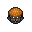 | Bearger | 1 bun + 1 bear steak | N/A | N/A |
| 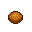 | Bun | 1 dough slice | 113 | A base for any self-respecting burger. |
| Butter Biscuit | 1 bun + 1 stick of butter | 188 | Well butter my biscuit! | |
| 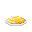 | Butter Noodles | 1 boiled spaghetti + 1 stick of butter | 338 | Noodles covered in savory butter. Simple and slippery, but delicious. |
| Cheesy Fries | 1 space fries + 1 cheese wedge | 225 | Fries. Covered in cheese. Duh. | |
| 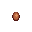 | Chocolate Egg | 1 boiled egg + 1 chocolate bar | 105 | Such, sweet, fattening food. |
| 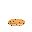 | Chocolate Pancake | 1 pancake + 1 chocolate bar | 338 | N/A |
| ClownBurger | 1 bun + 1 clown wig and mask | N/A | This tastes funny... | |
| Boiled Egg | 1 egg | 113 | A hard boiled egg. | |
| Boiled Rice | 1 ricebowl | 225 | A warm bowl of rice. | |
| 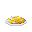 | Boiled Spaghetti | 1 uncooked spaghetti | 113 | A plain dish of noodles, this needs more ingredients. |
| 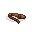 | Boiled Spider Leg | 1 spider leg | 118 | A giant spider's leg that's still twitching after being cooked. Gross! |
| Bear Cutlet | 1 raw bear cutlet | N/A | N/A | |
| Chicken Cutlet | 1 raw chicken cutlet | N/A | N/A | |
| 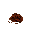 | Crab Meat | 1 raw crab meat | 223 | Some deliciously cooked crab meat. |
| 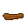 | Piece of Bacon | 1 raw piece of bacon | 75 | A delicious piece of bacon. |
| Bear Meat | 1 bear meat | N/A | N/A | |
| 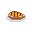 | Chicken Steak | 1 chicken meat | N/A | N/A |
| Gondola Steak | 1 gondola meat | N/A | N/A | |
| Killer Tomato Meat | 1 killer tomato meat | N/A | N/A | |
| Spider Steak | 1 spider meat | N/A | N/A | |
| Fried Facehugger | 1 dead facehugger | 75 | This looks... slightly less disgusting? | |
| 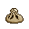 | Khinkali | 1 raw khinkali | 265 | One hundred khinkalis? Do I look like a pig? |
| 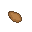 | Pastry Base | 1 raw pastry base | 38 | A base for any self-respecting pastry. |
| 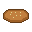 | Pizza Bread | 1 flat dough | 263 | Add ingredients to make a pizza. |
| 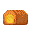 | Plain Bread Loaf | 1 dough | 375 | Some plain old earthen bread. |
| 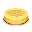 | Plain Cake | 1 cake batter | N/A | A plain cake, not a lie. |
| PlainPie | 1 pie dough | 338 | Cook it to get a pie. | |
| 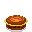 | Toasted Sandwich | 1 sandwich | 225 | Now if you only had a pepper bar. |
| Warm Berry-Pocket | 1 Berry-pocket | 158 | A relentlessly sweet donk-pocket, now warm and delicious. | |
| 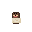 | Warm Gondola-Pocket | 1 Gondola-pocket | N/A | The choice to use real gondola meat in the recipe is controversial, to say the least. |
| Warm Honk-Pocket | 1 Honk-pocket | 168 | The award-winning donk-pocket, now warm and toasty. | |
| Warm Pizza-Pocket | 1 Pizza-pocket | 154 | Delicious, cheesy, and even better when hot. | |
| Warm Spicy-Pocket | 1 Spicy-pocket | 154 | The classic snack food, now maybe a bit too spicy. | |
| 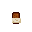 | Warm Teriyaki-Pocket | 1 Teriyaki-pocket | 160 | An east-asian take on the classic stationside snack, now steamy and warm. |
| 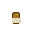 | Donk-Pocket | 1 pastry base + 1 meatball | 150 | The food of choice for the seasoned traitor. |
| 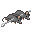 | Double Rat Kebab | 1 rat-kebab + 1 dead mouse | 600 | N/A |
| 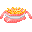 | Fish And Chips | 1 space fries + 1 carp fillet | 225 | I do say so myself chap. |
| 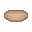 | Flat Dough | 1 dough | 225 | A flattened dough. |
| 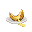 | Loaded Baked Potato | 1 potato + 1 cheese wedge | 225 | Totally baked. |
| 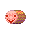 | Meat Clown | 1 banana + 1 steak | 75 | A delicious, round piece of meat clown. How horrifying. |
| 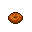 | Meat Donut | 1 raw cutlet + 1 pastry base | 143 | Tastes as gross as it looks. |
| 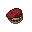 | Mime Burger | 1 bun + 1 mime mask | N/A | Its taste defies language. |
| 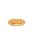 | Pancake | 1 pastry base | 188 | A fluffy pancake. The softer, superior relative of the waffle. |
| 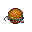 | Rat Burger | 1 bun + 1 dead mouse | N/A | Pretty much what you'd expect... |
| 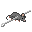 | Rat Kebab | 1 rods + 1 dead mouse | N/A | Not so delicious rat meat, on a stick. |
| Raw Facehugger | 1 Facehugger | 1 | This looks disgusting... but edible? | |
| 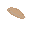 | Raw Pastry Base | 1 pie dough | 38 | Must be cooked before use. |
| Baklava Dish | 1 baklava | N/A | A portion of a delightful healthy snack made of nut layers with thin bread. | |
| Blumpkin Pie Slices | 1 blumpkin pie | 90 | A slice of blumpkin pie, with whipped cream on top. Is this edible? | |
| Banana-Nut Bread Slices | 1 banana-nut bread loaf | 160 | A slice of delicious banana bread. | |
| 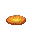 | Bread Slices | 1 bread loaf | N/A | A slice of home. |
| 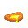 | Cream Cheese Bread Slices | 1 cream cheese bread loaf | 188 | A slice of yum! |
| 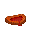 | Meatbread Slices | 1 meatbread loaf | 263 | A slice of delicious meatbread. |
| 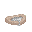 | Mimana Bread Slices | 1 mimana bread loaf | 190 | A slice of silence! |
| 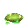 | Banana-Nut Bread Slices | 1 dead monster bread loaf | N/A | A worringly soggy and spiky slice of monster bread. |
| 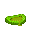 | Spider Meatbread Slices | 1 spider meatbread loaf | 263 | A slice of meatloaf made from an animal that most likely still wants you dead. |
| Tofubread Slices | 1 tofubread loaf | 188 | A slice of delicious tofubread. | |
| Xenomeatbread Slices | 1 xenomeatbread loaf | 263 | A slice of delicious meatbread. Extra Heretical. | |
| Angel Food Cake Slices | 1 angel food cake | N/A | A slice of heavenly cake. | |
| Apple Cake Slices | 1 apple cake | N/A | A slice of heavenly cake. | |
| Birthday Cake Slices | 1 birthday cake | 193 | A slice of your birthday. | |
| 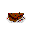 | Black And Strawberry Chocolate Cake Slices | 1 blackberry and strawberry chocolate cake | N/A | Just a slice of cake filled with assortment of blackberries and strawberries! |
| Black And Strawberry Vanilla Cake Slices | 1 blackberry and strawberry vanilla cake | N/A | Just a slice of cake filled with assortment of blackberries and strawberries! | |
| Brain Cake Slices | 1 brain cake | N/A | Lemme tell you something about prions. THEY'RE DELICIOUS. | |
| Carrot Cake Slices | 1 carrot cake | N/A | Carrotty slice of carrot cake, carrots are good for your eyes! Also not a lie. | |
| Cheese Cake Slices | 1 cheese cake | N/A | Slice of pure cheestisfaction. | |
| 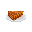 | Chocolate Cake Slices | 1 chocolate cake | N/A | Just a slice of cake, it is enough for everyone. |
| Clown Cake Slices | 1 clown cake | N/A | A slice of bad jokes, and silly props. | |
| Hardware Cake Slices | 1 hardware cake | N/A | A slice of electronic boards and some acid. | |
| Lemon Cake Slices | 1 lemon cake | N/A | Just a slice of cake, it is enough for everyone. | |
| 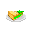 | Lime Cake Slices | 1 lime cake | N/A | Just a slice of cake, it is enough for everyone. |
| Orange Cake Slices | 1 orange cake | N/A | Just a slice of cake, it is enough for everyone. | |
| Plain Cake Slices | 1 plain cake | N/A | Just a slice of cake, it is enough for everyone. | |
| Pound Cake Slices | 1 pound cake | N/A | A slice of condensed cake made for filling people up quickly. | |
| Pumpkin Spice Cake Slices | 1 pumpkin spice cake | N/A | A spicy slice of pumpkin goodness. | |
| Slime Cake Slices | 1 slime cake | N/A | A slice of slime cake. | |
| Vanilla Cake Slices | 1 vanilla cake | N/A | A slice of vanilla frosted cake. | |
| Cheese Wedges | 1 cheese wheel | N/A | A wedge of delicious Cheddar. The cheese wheel it was cut from can't have gone far. | |
| Raw Bear Cutlets | 1 bear meat | N/A | N/A | |
| Raw Chicken Cutlets | 1 chicken meat | N/A | N/A | |
| 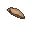 | Dough Slices | 1 flat dough | 75 | A slice of dough. Can be cooked into a bun. |
| Dulce de Batata Slices | 1 dulce de batata | 90 | A slice of sweet dulce de batata jelly. | |
| Killer Tomato Meat | 1 killer-tomato | 75 | A slice from a huge tomato. | |
| 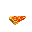 | Arnold Pizza Slices | 1 Arnold pizza | 225 | I come over, maybe I give you a pizza, maybe I break off your arm. |
| 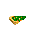 | Dank Pizza Slices | 1 dank pizza | 193 | So good, man... |
| 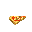 | Donkpocket Pizza Slices | 1 donkpocket pizza | 190 | Smells like donkpocket. |
| 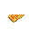 | Hawaiian Pizza Slices | 1 Hawaiian pizza | N/A | A slice of delicious controversy. |
| 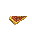 | Meat Pizza Slices | 1 meat pizza | 265 | A nutritious slice of meatpizza. |
| 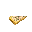 | Mushroom Pizza Slices | 1 mushroom pizza | 225 | Maybe it is the last slice of pizza in your life. |
| 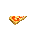 | Pizza Margherita Slices | 1 pizza margherita | N/A | A slice of the most cheezy pizza in galaxy. |
| 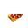 | Sausage Pizza Slices | 1 sausage pizza | N/A | Deliciously sausage-y. |
| 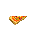 | Vegetable Pizza Slices | 1 vegetable pizza | 190 | A slice of the most green pizza of all pizzas not containing green ingredients. |
| Pumpkin Pie Slices | 1 pumpkin pie | 90 | A slice of pumpkin pie, with whipped cream on top. Perfection. | |
| Spell Burger | 1 bun + 1 wizard hat | N/A | This is absolutely Ei Nath. | |
| 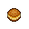 | Tofu Burger | 1 bun + 1 tofu | N/A | What.. is that meat? |
| Tofu Pie | 1 plain pie + 1 tofu | N/A | A delicious tofu pie. | |
| Xenoburger | 1 xeno steak + 1 bun | N/A | Smells caustic. Tastes like heresy. | |
| Xeno Pie | 1 plain pie + 1 xeno cutlet | N/A | A delicious meatpie. Probably heretical. |